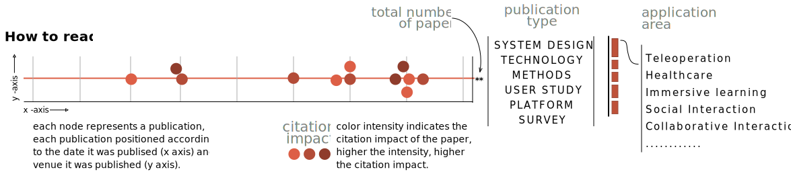

- Input Type
- Device Type
- Interaction (Cue)
- Cue Type
- Evaluation Type
Fig 1. A total of 367 papers that employed XR collaboration technology between 2000 and 2020 classified by (left-to-right): input type, device type, interaction, cue type and evaluation type in user studies.
Method
We conducted a structured search for publications using the digital libraries of the Association for Computing Machin-ery (ACM) and the Institute of Electrical and Electronics Engineers (IEEE).
Within these libraries, we used search terms with a focus on personal andsocial robotics.
The specific search terms we used were “personal robot”and “social AND robot AND personal.”
These terms were searched in thetitle, abstract, and keyword fields of the above libraries within the timerange of 2000 to 2020.
Only English publications were considered in oursearch.
Publications dated prior to 2000 were excluded as they were covered in earlier literature reviews and the most relevant technological in-novation for our review has occurred more recently.
This resulted in 566 publications. We then semantically screened the publications as follows:
- We excluded publications that included the search terms but were not aimed at understanding, testing, or implementing social robots - the search terms were associated with different aims.
- We excluded publications that included duplicates between the two libraries, or publications where the same or similar results were presented in different venues or publication formats. For example, the same work might have appeared in a poster or extended abstract form, and later published in a more extensive proceeding or journal article.
In such cases, we included only the final relative comprehensive publication, omitting the earlier preliminary publications.
- We excluded publications that focused on industrial robots - we were focused on research involved in the personal or social aspects of human-robot interaction. While some publications on industrial robots explored the societal impact of their integration into the industry, we excluded them from this review.

Fig 2.
In addition to analyzing paper topics, we also measured their relative impact by calculating the papers’ citation rate
$\frac{\textit{total number of citations}}{\textit{number of years since publication}}$
provides some indication about the relative importance of the papers.